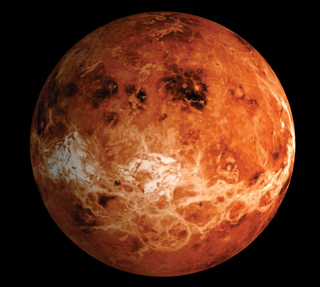
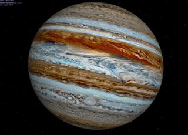
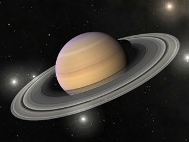

Меркурий — самая близкая к Солнцу планета (общие сведения о Меркурии и других планетах Солнечной системы вы найдете в приложении 1) — среднее расстояние от Солнца 57 909 176 км. Однако расстояние от Солнца до Меркурия может меняться от 46,08 до 68,86 млн км. Расстояние Меркурия от Земли составляет от 82 до 217 млн км. Ось Меркурия почти перпендикулярна плоскости его орбиты.
Из-за незначительного наклонения оси вращения Меркурия к плоскости его орбиты заметных сезонных изменений на этой планете нет. Нет у Меркурия и спутников.
Меркурий — маленькая планета. Его масса составляет двадцатую часть массы Земли, а радиус в 2,5 раза меньше земного.
Ученые считают, что в центре планеты находится большое железное ядро — на его долю приходится 80 % массы планеты, а сверху — мантия из каменных пород.
Для наблюдений с Земли Меркурий — трудный объект, так как его приходится наблюдать всегда на фоне вечерней или утренней зари низко над горизонтом, а кроме этого, в эту пору наблюдатель видит освещенной лишь половину его диска.
Первым исследовал Меркурий американский космический зонд «Маринер-10», который в 1974-1975 гг. трижды пролетел мимо планеты. Максимальное сближение этого космического зонда с Меркурием составляло 320 км.
Поверхность планеты похожа на сморщенную яблочную кожуру, она изрыта трещинами, впадинами, горными хребтами, наиболее высокие из которых достигают 2-4 км, отвесными уступами-эскарпами высотой 2-3 км и длиной в сотни километров. В ряде районов планеты на поверхности видны долины, бескратерные равнины. Средняя плотность грунта — 5,43 г/см3.
На изученном полушарии Меркурия имеется единственное ровное место — Равнина Жары. Предполагается, что это застывшая лава, излившаяся из недр после столкновения с гигантским астероидом около 4 млрд лет назад.
Атмосфера Меркурия имеет крайне низкую плотность. Она состоит из водорода, гелия, кислорода, паров кальция, натрия и калия (рис. 1). Водород и гелий планета, вероятно, получает от Солнца, а металлы испаряются с ее поверхности. «Атмосферой» эту тонкую оболочку можно назвать лишь с большой натяжкой. Давление у поверхности планеты в 500 млрд раз меньше, чем у поверхности Земли (это меньше, чем в современных вакуумных установках на Земле).
Максимальная температура поверхности Меркурия, зарегистрированная датчиками, +410 °С. Средняя температура ночного полушария равна -162 °С, а дневного +347 °С (этого достаточно, чтобы расплавить свинец или олово). Перепады температур из-за смены времен года, вызванной вытянутостью орбиты, на дневной стороне достигают 100 °С. На глубине 1 м температура постоянна и равна +75 °С, ведь пористый грунт плохо проводит тепло.
Органическая жизнь на Меркурии исключается.
Венера

Венера
Планета Венера — наша ближайшая соседка. Венера подходит к Земле ближе, чем любая другая планета, на расстояние 40 млн км и ближе. Расстояние от Солнца до Венеры составляет 108 000 000 км, или 0,723 а.е.
Размеры Венеры и масса близки к земным: диаметр планеты всего на 5 % меньше диаметра Земли, масса — 0,815 массы Земли, сила тяжести — 0,91 земной. При этом Венера очень медленно вращается вокруг своей оси в направлении, обратном вращению Земли (т. е. с востока на запад).
Несмотря на то, что в XVII-XVIII вв. различные астрономы неоднократно сообщали об открытии естественных спутников Венеры. В настоящее время известно, что таковые у планеты отсутствуют.
Атмосфера Венеры
В отличие от других планет земной группы, изучение Венеры с помощью телескопов оказалось невозможным, так как еще М. В.Ломоносов (1711 — 1765), наблюдая 6 июня 1761 г. прохождение планеты на фоне Солнца, установил, что Венера окружена «знатною воздушною атмосферой, таковой (лишь бы не большею), какова обливается около нашего шара земного».
Атмосфера планеты простирается до высоты 5500 км, а ее плотность в 35 раз превосходит плотность земной. Атмосферное давление в 100 раз выше чем на Земле, и достигает 10 млн Па. Строение атмосферы этой планеты представлено на рис. 1.
Последний раз прохождение Венеры на фоне диска Солнца в России астрономы, ученые и любители, смогли наблюдать 8 июня 2004 г. А 6 июня 2012 г. (т. е. с 8-летним интервалом) этот удивительный феномен можно будет наблюдать снова. Последующее прохождение состоится только через 100 лет.
Из-за высокой концентрации углекислого газа, который подобно пленке удерживает тепло у поверхности, на планете наблюдается типичный парниковый эффект (рис. 3). Благодаря парниковому эффекту возле поверхности Венеры исключено всякое существование жидкой воды. Температура воздуха на Венере составляет примерно +500 °С. В таких условиях органическая жизнь исключается.
Благодаря советским и американским межпланетным станциям в настоящее время известно, что Венера — планета со сложным рельефом.
Здесь обнаружены гористые участки местности с перепадом высот 2-3 км, вулкан с диаметром основания 300-400 км и вы
сотой около 1 км, огромная котловина (протяженностью 1500 км с севера на юг и 1000 км с запада на восток) и относительно ровные участки. В приэкваториальной области планеты имеется более 10 кольцевых структур, подобных кратерам Меркурия, диаметром от 35 до 150 км, но сильно сглаженных и плоских. Кроме этого, в коре планеты есть разлом длиной 1500 км, шириной 150 км и глубиной около 2 км.
В 1981 г. станции «Венера-13» и «Венера-14» исследовали образцы грунта планеты и передали на землю первые цветные фотографии Венеры. Благодаря этому мы знаем, что поверхностные породы планеты близки по составу к земным осадочным породам, а небо над горизонтом Венеры оранжево-желто-зеленое.
В настоящее время полеты людей на Венеру маловероятны, но на высоте 50 км от планеты температура и давление близки к условиям на Земле, поэтому здесь возможно создание межпланетных станций для изучения Венеры и для подзарядки космических кораблей.
Марс
Марс
Орбита Марса вытянута, поэтому расстояние до Солнца меняется в течение года на 21 млн км. Расстояние до Земли также не постоянно. В Великие противостояния планет, происходящие один раз в 15-17 лет, когда Солнце, Земля и Марс выстраиваются в одну линию, Марс максимально приближается к Земле на 50-60 млн км. Последнее Великое противостояние было в 2003 г. Максимальная удаленность Марса от Земли достигает 400 млн км.
Год на Марсе почти вдвое длиннее земного — 687 земных дней. Ось наклонена к орбите — 65°, что ведет к смене времен года. Период вращения вокруг своей оси равен 24,62 ч, т. е. всего на 41 мин больше периода вращения Земли. Наклон экватора к орбите почти как у Земли. Это значит, что смена дня и ночи и смена времен года на Марсе протекает почти так же, как на Земле.
По расчетам, ядро Марса имеет массу до 9 % массы планеты. Оно состоит из железа и его сплавов и пребывает в жидком состоянии. Марс имеет мощную кору толщиной 100 км. Между ними находится силикатная мантия, обогащенная железом. Красный цвет Марса как раз и объясняется тем, что его грунт наполовину состоит из окислов железа. Планета как бы «проржавела».
Небо над Марсом темно-фиолетовое, и яркие звезды видны даже днем в спокойную тихую погоду. Атмосфера имеет следующий состав (рис. 46): углекислый газ — 95 %, азот — 2,5, атомарный водород, аргон — 1,6 %, остальное — водяные пары, кислород. Зимой углекислота замерзает, превращаясь в сухой лед. В атмосфере встречаются редкие облака, над низинами и на дне кратеров в холодное время суток стоят туманы.
Среднее давление атмосферы на уровне поверхности около 6,1 мбар. Это в 15 000 раз меньше, чем на Венере, и в 160 раз меньше, чем у поверхности Земли. В самых глубоких впадинах давление достигает 12 мбар. Атмосфера Марса сильно разряжена. Марс — холодная планета. Самая низкая зарегистрированная температура Марса -139 °С. Для планеты характерен резкий перепад температур. Амплитуда температур может составлять 75-60 °С. На Марсе есть климатические пояса, подобные земным. В экваториальном поясе в полдень температура поднимается до +20-25 °С, а ночью падает до -40 °С. В умеренном поясе утром температура составляет 50-80 °С.
Предполагают, что несколько миллиардов лет назад на Марсе была атмосфера плотностью 1-3 бар. При таком давлении вода должна находиться в жидком состоянии, а углекислый газ — испаряться, и мог возникнуть парниковый эффект (как на Венере). Однако Марс постепенно терял атмосферу из-за своей малой массы. Парниковый эффект уменьшался, появились вечная мерзлота и полярные шапки, которые наблюдаются и поныне.
На Марсе находится самый высокий вулкан Солнечной системы — Олимп. Его высота 27 400 м, а диаметр основания вулкана достигает 600 км. Это потухший вулкан, который, вероятнее всего, около 1,5 млрд лет назад извергал лаву.
В настоящее время на Марсе не найдено ни одного действующего вулкана. Около Олимпа есть и другие гигантские вулканы: гора Аскрийская, гора Павлина и гора Арсия, высота которых превышает 20 км. Вытекшая из них лава, прежде чем застыть, растеклась во все стороны, поэтому вулканы по форме напоминают скорее лепешки, чем конусы. Есть на Марсе и песчаные дюны, гигантские каньоны и разломы, а также метеоритные кратеры. Наиболее грандиозная система каньонов — долина Маринера длиной 4 тыс. км. В прошлом на Марсе могли протекать реки, которые и оставили русла, наблюдаемые в настоящее время.
В 1965 г. американский зонд «Маринер-4» передал первые изображения Марса. На основании этих, а также снимков с «Маринер-9», советских зондов «Марс-4» и «Марс-5» и американских «Викинг-1» и «Викинг-2», работавших в 1974 г., была составлена первая карта Марса. А в 1997 г. американский космический корабль доставил на Марс робота — шестиколесную тележку длиной 30 см и массой 11 кг. Робот находился на Марсе с 4 июля по 27 сентября 1997 г., изучая эту планету. Передачи о его передвижении транслировались по телевидению и сети Интернет.
У Марса два спутника — Деймос и Фобос.
Предположение о существовании у Марса двух спутников высказал в 1610 г. немецкий математик, астроном, физик и астролог Иоганн Кеплер (1571 — 1630), открывший законы движения планет.
Однако открыты спутники Марса были только в 1877 г. американским астрологом Асафом Холлом (1829-1907).
Юпитер

Юпитер
Юпитер — самая большая планета Солнечной системы. Диаметр планеты в 11 раз больше диаметра Земли и составляет 142 718 км.
Вокруг Юпитера находится тонкое кольцо, опоясывающее его. Плотность кольца очень мала, поэтому оно невидимо (как у Сатурна).
Период вращения Юпитера вокруг оси — 9 ч 55 мин. При этом каждая точка экватора движется со скоростью 45 000 км/ч.
Так как Юпитер — не твердый шар, а состоит из газа и жидкости, экваториальные его части вращаются быстрее, чем приполярные области. Ось вращения Юпитера почти перпендикулярна его орбите, следовательно, на планете смена времен года выражена слабо.
Масса Юпитера намного превышает массу всех других планет Солнечной системы, вместе взятых, и составляет 1,9 • 1027 кг. При этом средняя плотность Юпитера составляет 0,24 средней плотности Земли.
Атмосфера Юпитера очень плотная. Она состоит из водорода (89 %) и гелия (11 %), напоминая по химическому составу Солнце (рис. 1). Ее протяженность 6000 км. Оранжевый цвет атмосфере
придают соединения фосфора или серы. Для людей она губительна, так как содержит ядовитые аммиак и ацетилен.
Разные части атмосферы планеты вращаются с разными скоростями. Такое различие породило пояса облаков, которых у Юпитера три: наверху — облака из оледеневшего аммиака; под ними — кристаллы сероводорода аммония и метана, а в самом нижнем слое — водяной лед и, возможно, жидкая вода. Температура верхних облаков составляет 130 °С. Кроме того, Юпитер имеет водородную и гелиевую короны. Ветры на Юпитере достигают скорости 500 км/ч.
Достопримечательностью Юпитера является Большое Красное Пятно, которое наблюдают уже 300 лет. Оно было открыто в 1664 г. английским естествоиспытателем Робертом Гуком (1635-1703). Сейчас его длина достигает 25 000 км, а 100 лет назад она была около 50 000 км. Это пятно впервые было описано в 1878 г., а зарисовано 300 лет назад. Оно как бы живет своей жизнью — то расширяется, то сжимается. Цвет его также меняется.
Американские зонды «Пионер-10» и «Пионер-11», «Вояджер-1» и «Вояджер-2», «Галилео» выяснили, что у пятна нет твердой поверхности, оно вращается, как циклон в атмосфере Земли. Предполагают, что Большое Красное Пятно — это атмосферное явление, вероятно, верхушка циклона, бушующего в атмосфере Юпитера. В атмосфере Юпитера обнаружено также белое пятно размером более 10 000 км.
На 1 марта 2009 г. у Юпитера известно 63 спутника. Самые крупные из них Но и Европа размером с Меркурий. Они всегда повернуты к Юпитеру одной стороной, как Луна к Земле. Эти спутники называют галилеевыми, так как их впервые открыл итальянский физик, механик и астроном Галилео Галилей (1564-1642) в 1610 г., испытывая свой телескоп. На Ио имеются действующие вулканы.
Двадцать внешних спутников Юпитера настолько далеки от планеты, что невидимы с ее поверхности невооруженным глазом, а Юпитер в небе самого дальнего из них выглядит меньше Луны.
Сатурн

Сатурн
Планета Сатурн — один из самых ярких объектов на нашем звездном небе. Отличительной ее особенностью является наличие колец. Впервые их увидел в 1610 г. Г. Галилей, но не понял, что это такое, записав, что Сатурн состоит из частей.
Полвека спустя голландский математик, физик и астроном Христиан Гюйгенс (1629-1695) сообщил о наличии у Сатурна кольца, а в 1675 г. известный итальянский и французский астроном Жан Доминик Кассини (1625-1712) обнаружил между кольцами щель.
Эти кольца видимы с Земли даже в небольшой телескоп. Они состоят из тысяч и тысяч небольших твердых обломков камней и льда, которые вращаются вокруг планеты. Один раз в 14-15 лет колец Сатурна с Земли не видно, так как они поворачиваются ребром.
Поэтому Сатурн — не твердый шар, а состоит из газа и жидкости, экваториальные его части быстрее вращаются, чем приполярные области: на полюсах один оборот совершается примерно на 26 мин медленнее.
Одна из особенностей Сатурна заключается в том, что это единственная планета в Солнечной системе, чья плотность меньше плотности воды. Атмосфера Сатурна очень плотная, она состоит на 94 % из водорода и на 6 % из гелия. Температура на поверхности планеты 150 °С.
Скорость ветров на Сатурне зависит от широты места, достигая 500 м/с, что втрое больше, чем на Юпитере. В атмосфере Сатурна часто наблюдаются штормы, хотя и не такие мощные, как знаменитое Красное Пятно Юпитера. В частности, на Сатурне обнаружено Большое Коричневое Пятно.
Планета имеет восемь больших главных и множество малых спутников.
Большинство спутников состоит из льда: их плотность не превышает 1400 кг/м3 У наиболее крупных спутников формируется каменистое ядро. Почти все спутники всегда повернуты к планете одной стороной.
Самый крупный спутник Сатурна — Титан. По своей величине он превосходит планету Меркурий. Его диаметр 5150 км. Он был открыт в 1655 г. Христианом Гюйгенсом. На Титане есть океаны, моря, континенты. Температура составляет 180 °С. Этот спутник окутан оранжевой атмосферой из метана и этана.
Спутник Энцелад — самое светлое тело Солнечной системы, которое, по-видимому, покрыто тонким слоем инея. Два наиболее крупных кратера на этом спутнике Сатурна носят имена Али-Бабы и Аладдина.
Гиперион — темный спутник неправильной формы с хаотическим собственным вращением. Он не имеет постоянной скорости вращения вокруг своей оси: она меняется в течение месяца на десятки процентов.
Спутник Сатурна Феба обращается вокруг планеты в обратную сторону.